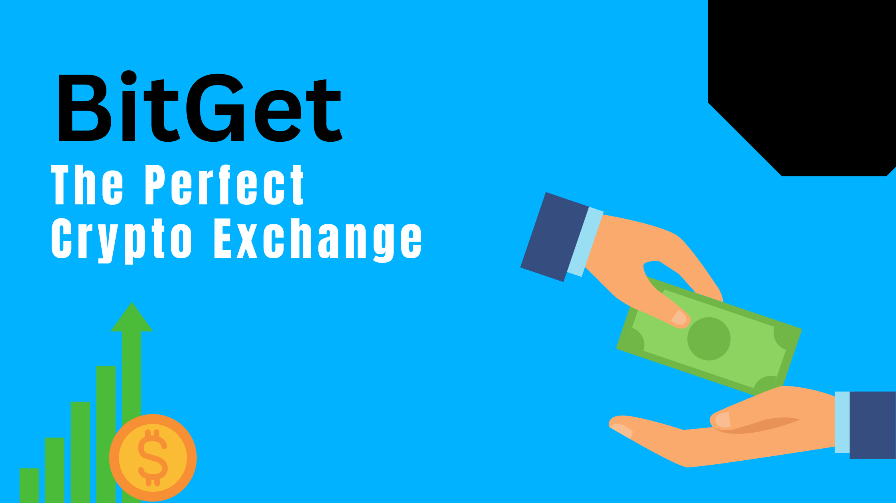

What is Bitget?
Founded in 2018, Bitget is a global cryptocurrency exchange that caters to various merchants and is dedicated to continuous improvement.
Features
The trading strategy and workings of Bitget are quite straightforward as users can buy and sell their preferred cryptocurrencies and register their profit and loss in their accounts. On the other hand, futures trading opens the clients to high risk of loss exposure, especially while trading pairs like BTC/USD or ETH/USDT on a leverage limit of as high as 125x.
What we feel is one of the best offerings from Bitget is the copy trading feature, which allows less knowledgeable users to execute profitable trades in the way more knowledgeable users do – by letting them copy the effective strategies. Thus, users can choose, depending on the risk appetite level and the level of trade experience.
Bitget's trading component functions as a community selling platform, promoting simple copy trading so traders can share market insights and practical wisdom to enhance their trading strategies. Additionally, users can generate passive income through Bitget's Staking and Swimming programs, which offer specific cryptocurrencies and interest rates to encourage user engagement and confidence.
Security Purpose
Bitget utilizes a tiered fee structure for trading, where a fixed amount of BGBT is not managed for the trading crowd and platform. Trading fees vary depending on the user's trading activity. Bitget operates with its own liquidity token, BGD, which serves various purposes, including easing trading operations, reducing fees, and launching bid coins.
The buying and selling of different cryptocurrencies occur on the same exchange, with specific terms, conditions, and privacy policies in place to connect users with the platform while offering a reliable system.
Download Bitget
Download Bitget from Google Play Store
Release Information
Bitget was released on April 3, 2020, with its latest update on October 25, 2024, currently running version 2.44.1 and a size of 78.91 MB.
If you're diving into the world of cryptocurrency trading, Bitget is a platform you should consider. Known for its user-friendly interface, innovative features, and strong security measures, Bitget caters to traders at every level. In this guide, we’ll walk you through how to get started with trading, sharpen your trading skills, and protect yourself from losses—all explained in simple terms that users can easily understand.
How to Get Started with Bitget
Starting your journey on Bitget is simple and hassle-free. Here’s how you can create your account and get set up for trading:
- Visit the Official Bitget Website or App
Head to the official Bitget website or download their app from your app store. Double-check that you're on the genuine platform to stay safe from phishing scams.
- Sign Up in a Few Easy Steps
- Click the Sign Up button.
- Provide your email or phone number, set a secure password, and agree to the terms.
- Verify your details by entering the code sent to your email or phone.
- Complete Identity Verification (KYC)
To unlock all the features, you’ll need to complete the KYC process. Upload an ID (like a passport or driver’s license) and a selfie for verification. It’s quick and ensures your account is secure.
- Boost Your Security
- Set up Two-Factor Authentication (2FA) for extra protection.
- Use anti-phishing codes to confirm genuine communications from Bitget.
- Deposit Funds
Once your account is verified, go to the “Wallet” section. Choose a currency (crypto or fiat), follow the deposit instructions, and you’re ready to trade!
Now that you’re all set, take a moment to explore Bitget’s features like spot trading, futures trading, and copy trading—you’ll find something for every trader.
How to Master Trading on Bitget
Becoming a pro trader doesn’t happen overnight, but with the right approach and consistent effort, Bitget makes it easier. Here’s how to elevate your trading game:
- Understand the Basics
Start by learning the essential concepts—like market orders, stop-loss, and leverage. Bitget offers plenty of tutorials and resources to help beginners.
- Practice Risk-Free
Bitget’s demo account is a game-changer for beginners. You can practice trading with virtual funds, get familiar with the tools, and test your strategies without any real risk.
- Dive into Market Analysis
Study price charts, trends, and technical indicators like RSI (Relative Strength Index) and Moving Averages. Bitget provides all these tools on its platform, making it easy to analyze the market.
- Follow Successful Traders
Use Bitget’s copy trading feature to follow and replicate the moves of experienced traders. This is especially helpful when you’re still figuring out your own strategies.
- Create a Plan and Stick to It
Decide your trading style—are you a day trader or a long-term investor? Set clear goals and stick to your plan no matter what happens.
- Keep Adapting
Markets are unpredictable, so review your strategies often. Learn from mistakes and refine your approach to stay consistent.
With these steps, you’ll find yourself trading like a pro sooner than you think. Just remember—it’s a journey, not a race.
How to Stay Safe from Losses on Bitget During Trading
Crypto trading can be risky, but there are smart ways to protect your investments and minimize potential losses. Here’s how you can stay safe while trading on Bitget:
- Start Small
Don’t go all in right away. Start with a small investment to understand the market and the platform.
- Use Stop-Loss and Take-Profit Orders
These tools are lifesavers. A stop-loss order automatically closes your trade if the market moves against you, while a take-profit order locks in your gains when the price reaches a certain level.
- Diversify Your Portfolio
Don’t put all your money into one cryptocurrency. Spread your investments across different assets to balance the risk.
- Avoid Overusing Leverage
While leverage can multiply your profits, it can also magnify your losses. Use it wisely and only when you fully understand its risks.
- Stay Informed
Keep an eye on market news, global events, and updates that might affect cryptocurrency prices. Bitget’s news section is a great resource for staying in the loop.
- Manage Your Emotions
Trading isn’t just about numbers—it’s also about mindset. Don’t let fear or greed control your decisions. Stick to your plan, and if things don’t go your way, accept it and move on.
- Set Limits on Each Trade
Follow the “1-5% rule”—only risk a small percentage of your trading capital on any single trade. This way, even if one trade goes south, you won’t lose everything.
- Secure Your Account
Make use of Bitget’s security features like 2FA and withdrawal whitelists. These ensure your account is safe from unauthorized access.
By taking these precautions, you’ll reduce the chances of major losses and trade with confidence.